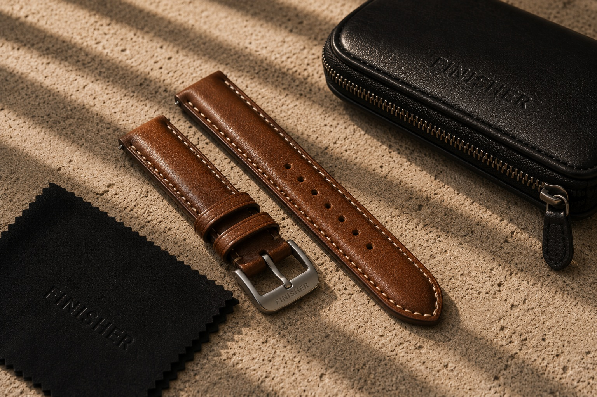
Heritage Leather Strap – Cognac
Full-grain vegetable-tanned leather. Hand-finished edges. 20mm.
£89.00
A considered collection of watches and accessories for men — selected for quality, utility and understated style.
See Collection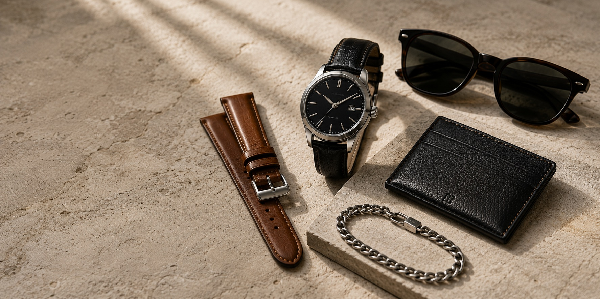
Five carefully considered categories of essentials
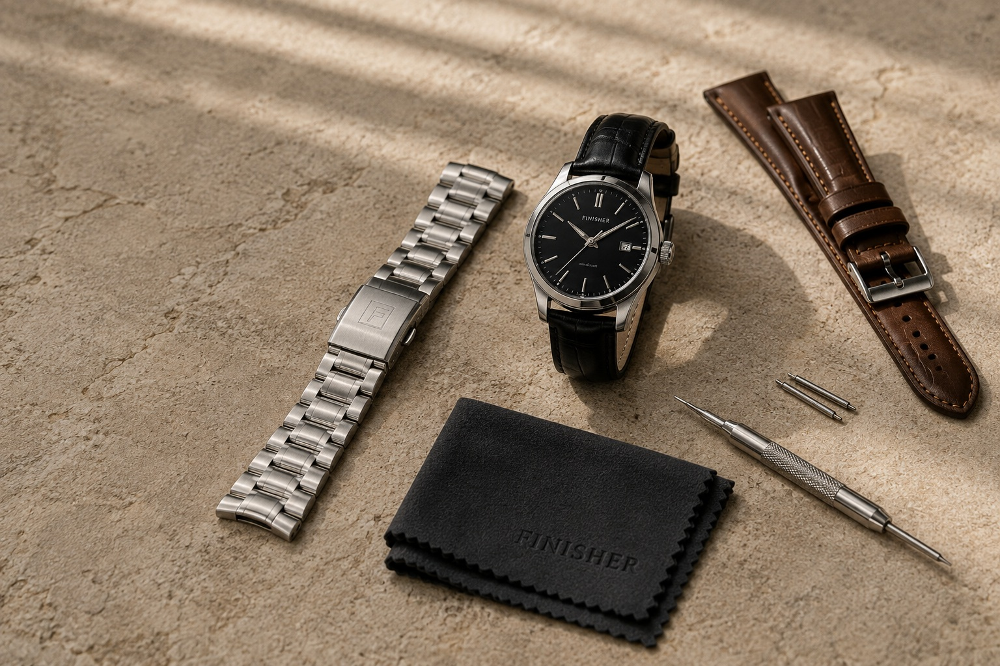
Straps, storage, care and accessories for the watches worth keeping.
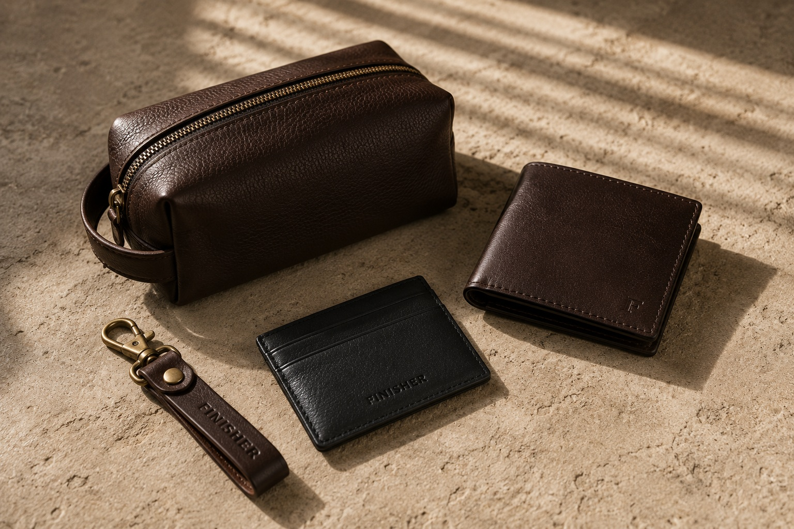
Bags, wallets, cardholders and everyday pieces designed to travel well.
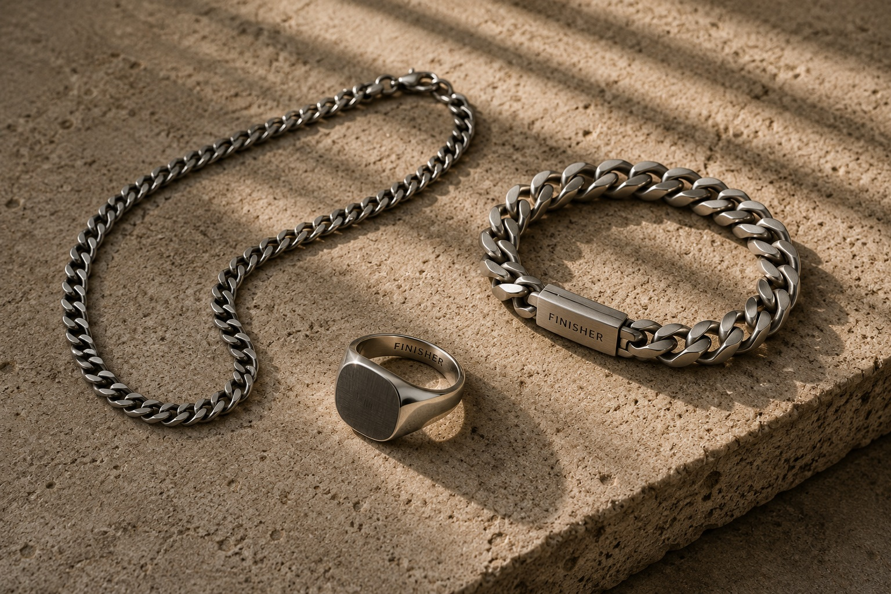
Understated chains, bracelets and considered details.
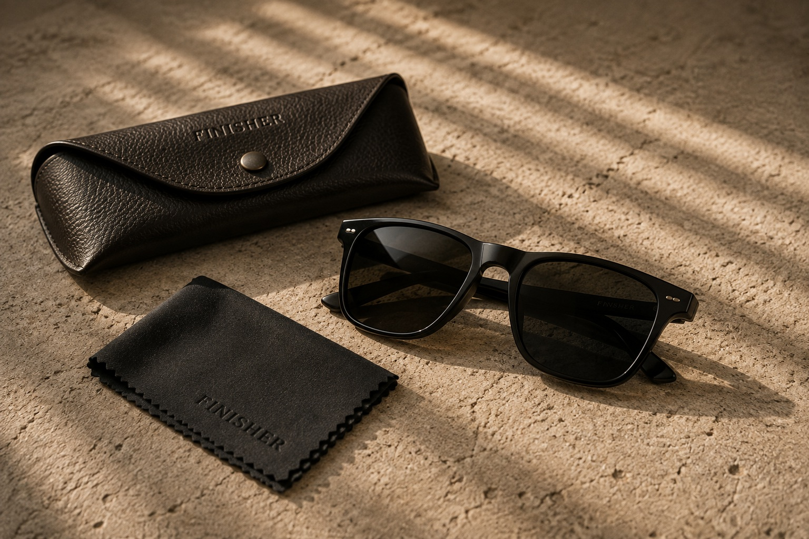
Timeless sunglasses chosen for shape, materials and wearability.
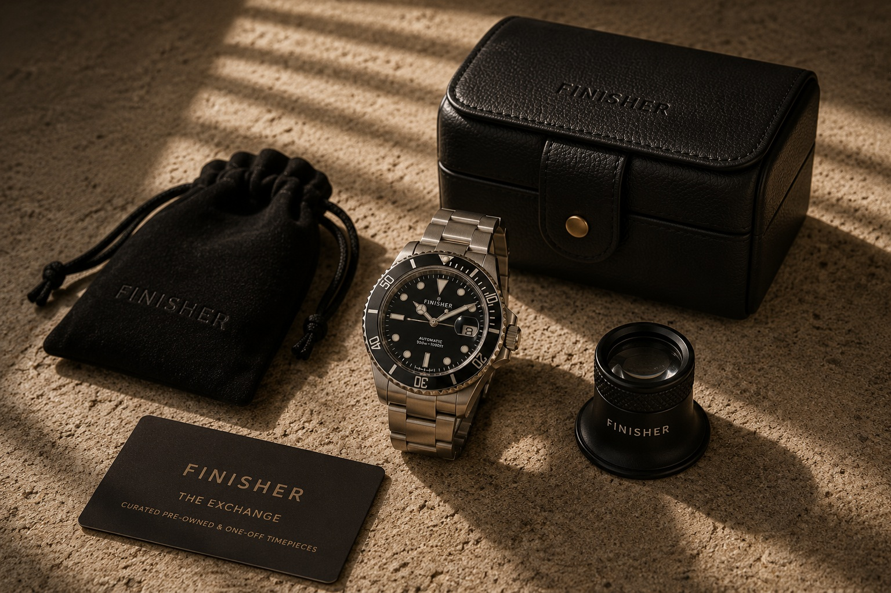
Pre-owned watches, discontinued pieces and one-off finds.
A curated selection of pieces we wear

Full-grain vegetable-tanned leather. Hand-finished edges. 20mm.
£89.00
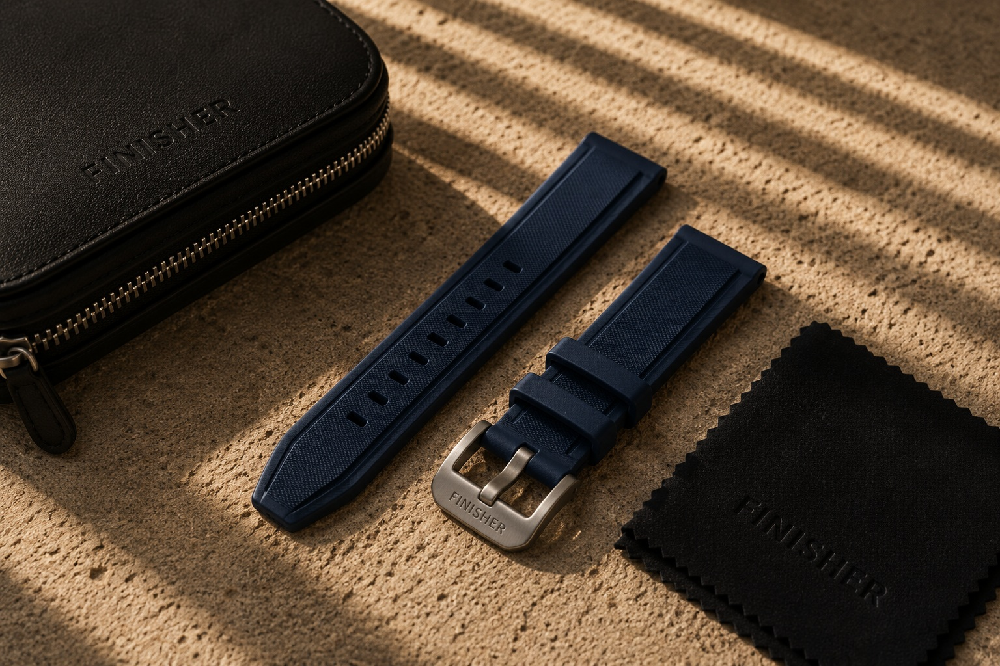
Water-resistant FKM rubber. Quick-release spring bars. 22mm.
£45.00
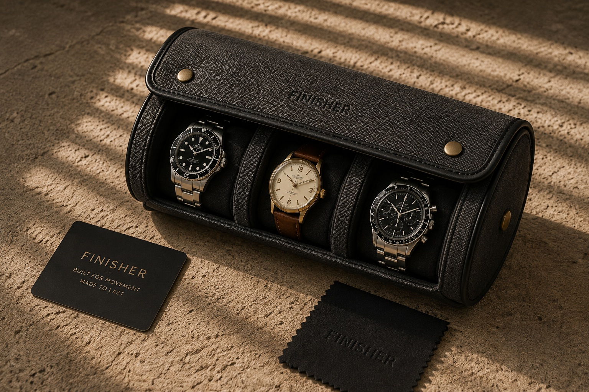
Waxed canvas with felt lining. Holds up to 3 watches. Brass snap closure.
£65.00
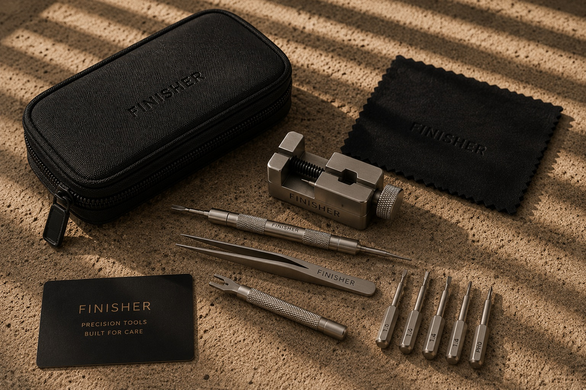
Spring bar remover, link remover, and micro screwdriver. Leather pouch included.
£58.00
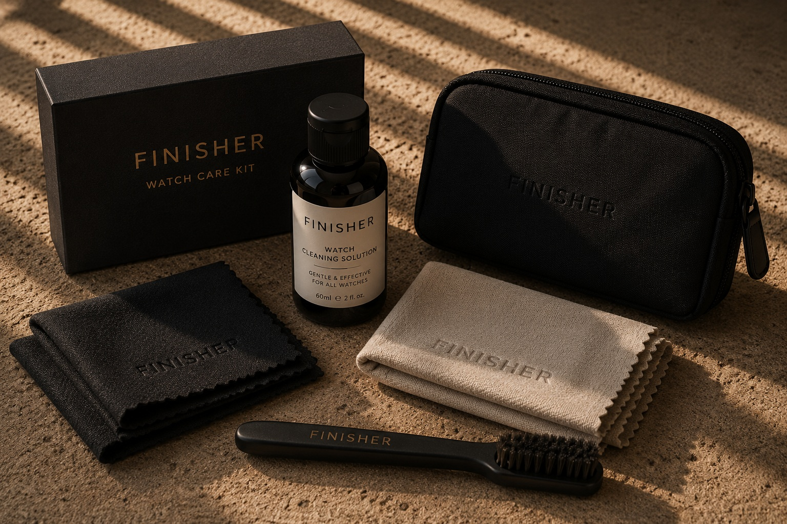
Microfiber cloths, cleaning solution, and soft brush. Professional care in one package.
£38.00
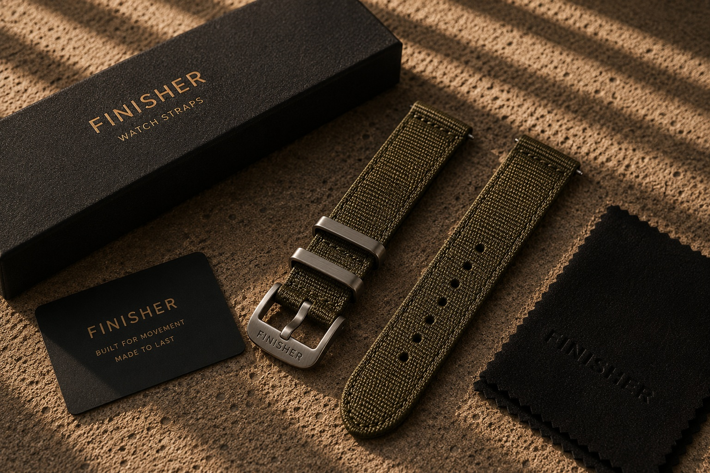
Military-grade nylon with stainless steel hardware. Comfortable and durable. 20mm.
£32.00
The small details often complete an outfit. A good watch strap. A considered wallet. A piece of jewellery that works. These finishing touches deserve the same care you'd give to the watch itself.
We select accessories across several categories—watches, carry goods, jewellery, eyewear and one-off finds. Each piece is chosen for quality, utility and understated design. We work with makers who understand that the best accessories are the ones you reach for without thinking.
This isn't mass inventory. It's curation.
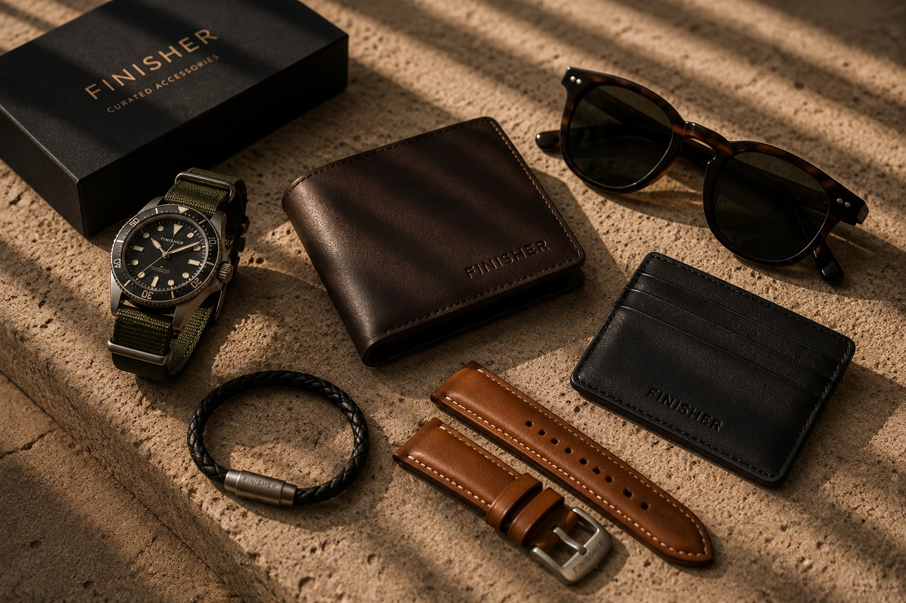
Each piece is selected for quality, utility and understated design. We don't stock everything—we stock what works.
We work with makers who understand that details matter. Materials, construction and finishing are what set pieces apart.
Accessories should earn their place. Function, longevity and honest design matter more than trends.
Premium doesn't mean obvious. The best pieces work quietly, without noise or ego. You simply reach for them.
We choose pieces that combine usefulness, quality and understated design. Each item is selected by people who actually use them. We work with respected makers and stock only what we'd wear ourselves. Our selection spans five categories: Watch, Carry, Jewellery, Eyewear and The Exchange.
The Exchange is our space for pre-owned watches, discontinued pieces and one-off finds. These are pieces with history—interesting watches that didn't make it into full production, collectible accessories and occasional vintage finds. Each piece is authenticated and valued for its story.
Most watch straps attach via spring bars. Our tool sets include a spring bar remover. Simply align the tool with the spring bar, push gently, and the bar retracts for easy removal. We provide care guides with step-by-step instructions if needed.
Our watch straps come in standard widths (18mm, 20mm, 22mm, 24mm). Check your watch specifications to find the right size. If you're unsure, reach out and we'll help confirm the fit.
Avoid prolonged water exposure and store in a cool, dry place. Quality leather develops character over time with proper care. We provide detailed care cards with each leather purchase, and our care kits include everything needed for maintenance.